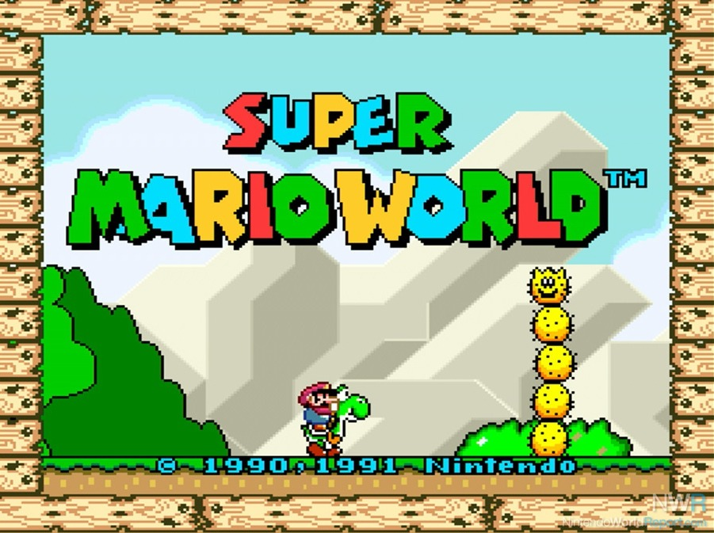
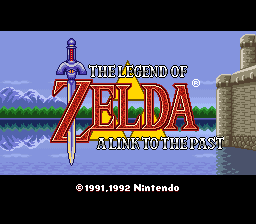
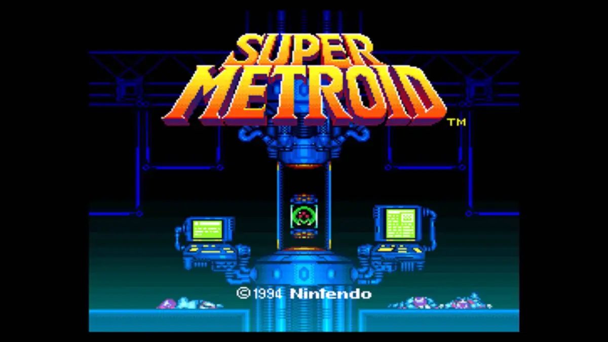
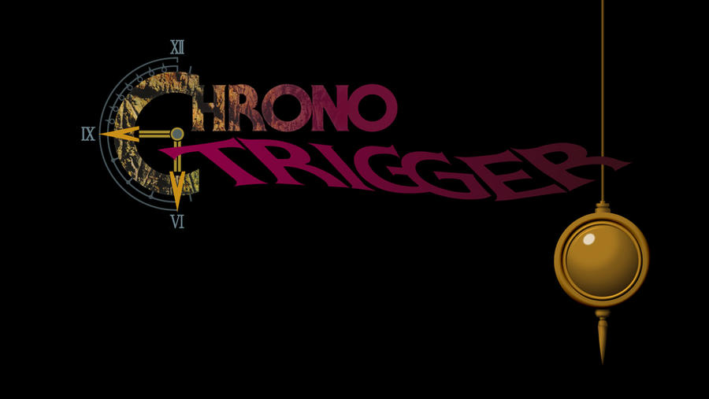
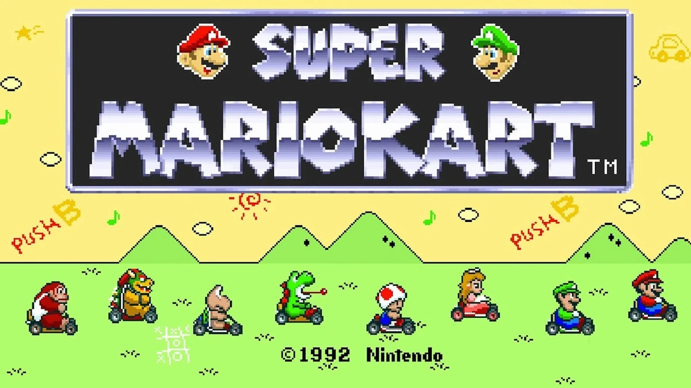
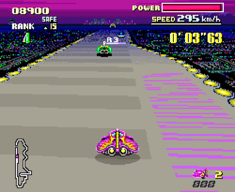

Super
Nintendo
Entertainment
System
The Super Nintendo Entertainment System (SNES), also known as the Super Famicom in Japan, holds a cherished place in gaming history as one of the most iconic and beloved gaming consoles of all time. Launched in 1990 (1991 in North America and Europe), the SNES was the successor to the original Nintendo Entertainment System (NES) and marked a significant leap forward in gaming technology and creativity.
One of the standout features of the SNES was its advanced 16-bit graphics and sound capabilities. Games on the SNES showcased vibrant colors, smooth animations, and detailed sprites that pushed the boundaries of what was possible in console gaming at the time. The console's audio chip, known as the S-SMP, delivered rich and immersive soundtracks, enhancing the gaming experience and creating memorable moments for players.
The SNES also boasted a diverse and impressive library of games, ranging from iconic franchises like Super Mario, The Legend of Zelda, and Donkey Kong Country to innovative titles like Super Metroid, Chrono Trigger, and Final Fantasy VI. Its game lineup catered to a wide range of tastes and preferences, ensuring that there was something for everyone to enjoy, whether they were fans of platformers, RPGs, action-adventure games, or sports simulations.
Another key feature of the SNES was its controller design, which introduced the iconic "Y," "X," "B," and "A" face buttons layout that has since become a standard in console gaming. The controller's ergonomic design and intuitive button placement made it comfortable to use for long gaming sessions and contributed to the overall enjoyment of playing games on the SNES.
Titles
Super Mario World
The Super Nintendo Entertainment System (SNES) boasted an impressive library of top-notch titles that became iconic for their gameplay, graphics, and lasting appeal. One of the standout titles on the SNES is "Super Mario World." Released as a launch title for the console, this game introduced players to Yoshi, Mario's lovable dinosaur companion, and offered a sprawling world filled with secrets, power-ups, and challenging levels that showcased the SNES's capabilities.
The Legend of Zelda: A Link to the Past
Another legendary title for the SNES is "The Legend of Zelda: A Link to the Past." This action-adventure game expanded on the gameplay mechanics of its predecessors, introducing a parallel world mechanic and a deep, immersive storyline. With its intricate dungeons, memorable characters, and innovative gameplay, "A Link to the Past" remains a fan favorite and a defining entry in the Zelda series.
Super Metroid
"Super Metroid" is often hailed as one of the greatest games of all time and a pinnacle of the Metroidvania genre. Its atmospheric world, non-linear exploration, and tight gameplay mechanics set a standard that many games in the genre would aspire to emulate. The game's sense of isolation, combined with the thrill of discovery and intense boss battles, made it a standout experience on the SNES.
Chrono Trigger
"Chrono Trigger" is another RPG masterpiece that left a lasting impact on players. Developed by a dream team of Japanese RPG designers, including Hironobu Sakaguchi, Yuji Horii, and Akira Toriyama, "Chrono Trigger" wove together time travel, memorable characters, multiple endings, and a captivating storyline into a gaming experience that is still cherished by fans decades later.
Super Mario Kart
"Super Mario Kart" revolutionized racing games with its blend of kart racing, iconic characters from the Mario universe, and inventive track designs. The game's multiplayer mode became a favorite among friends and families, leading to countless hours of competitive and entertaining gameplay. Its success spawned a long-running series that continues to be popular across Nintendo's consoles.
Another Dimension
Mode 7 on the Super Nintendo Entertainment System (SNES) was a groundbreaking graphical feature that revolutionized gaming visuals during the 16-bit era. It was a graphics mode that allowed for the creation of pseudo-3D effects and simulated depth perception by scaling, rotating, and skewing background layers. Mode 7 was prominently featured in games like "Super Mario Kart," where it was used to create the illusion of racing on three-dimensional tracks, even though the gameplay remained on a 2D plane. This innovative technology not only added visual flair to games but also enhanced gameplay experiences by offering dynamic and immersive environments that were previously unseen on home consoles.
